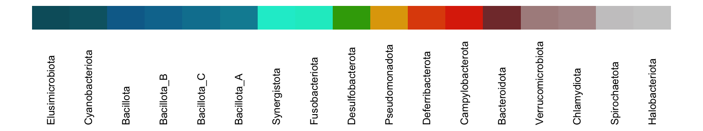
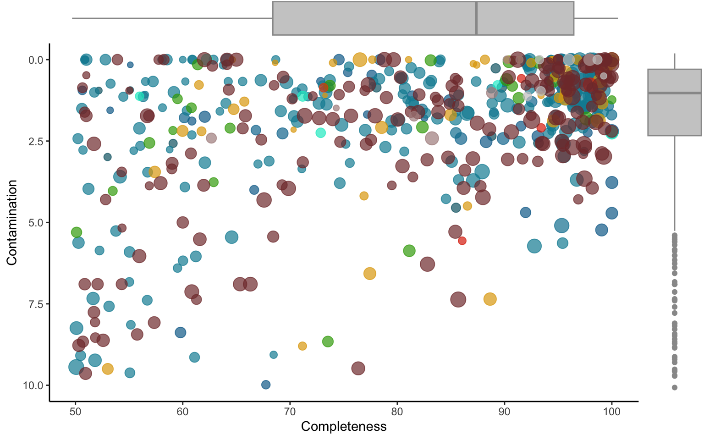
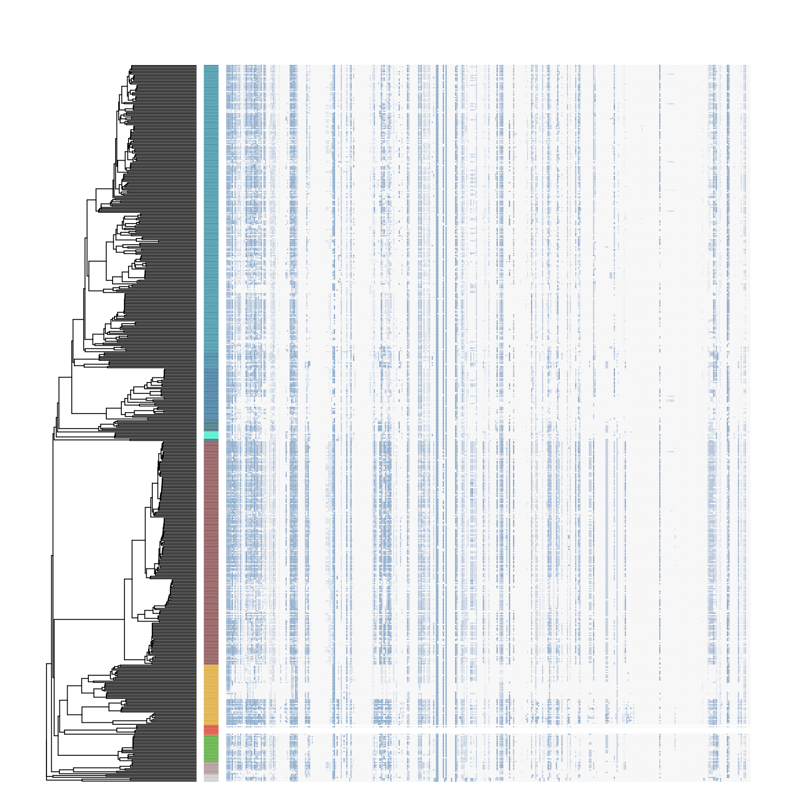
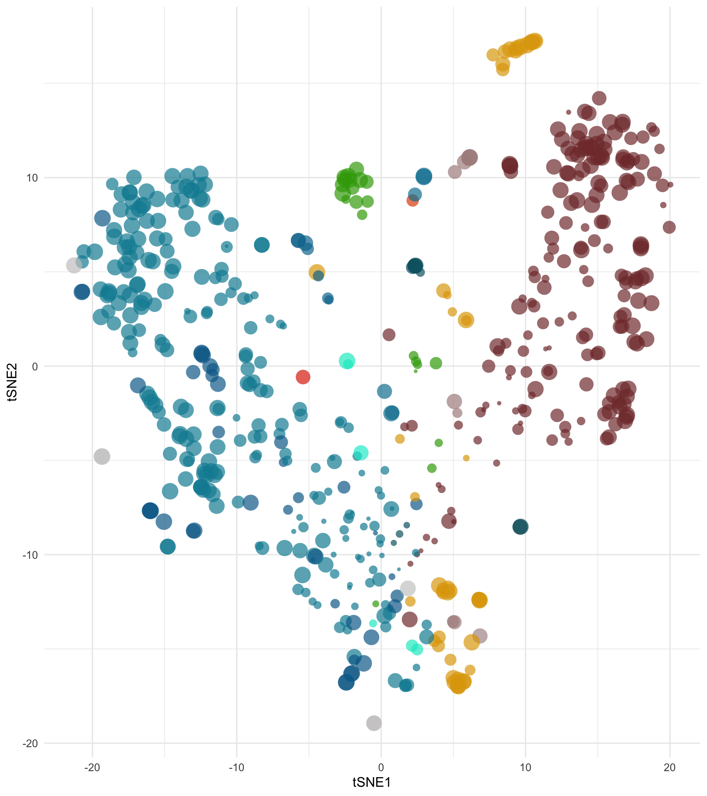

Chapter 3 MAG catalogue
This workflow explores the characteristics of the MAG catalogue generated through the EHI pipeline. Note the workflow begins where the General analysis pipeline ends, so make sure you go through the general pipeline before starting working on this document.
3.1 MAG phylogeny
You can visualise the phylogeny of MAGs in multiple ways. Here we describe a workflow to generate a circular plot with a bunch of relevant information in outer rings.
Prepare MAG metadata
First, we need to prepare the MAG metadata we want to plot in the outer rings of the tree.
# Which phylum the MAG belongs to
phyla <- ehi_phylum_colors %>%
right_join(mags_table, by=join_by(phylum == phylum)) %>%
arrange(match(genome, tree$tip.label)) %>%
select(phylum, colors) %>%
unique()
# What is the genome size of the MAG in MBs (megabases)
mag_sizes <- mags_table %>%
select(c(genome,mag_size)) %>%
mutate(mag_size=round(mag_size/1000000,2))
# What is the completeness of the MAG
mag_completeness <- mags_table %>%
select(c(genome,completeness)) %>%
as.data.frame() %>%
remove_rownames() %>%
column_to_rownames(var = "genome")
# Generate the phylum color heatmap
heatmap <- ehi_phylum_colors %>%
right_join(mags_table, by=join_by(phylum == phylum)) %>%
arrange(match(genome, tree$tip.label)) %>%
select(genome,phylum) %>%
mutate(phylum = factor(phylum, levels = unique(phylum))) %>%
column_to_rownames(var = "genome")Plot phylogenetic tree
The next step is to plot the actual tree.
# Create baseline circular tree
circular_tree <- force.ultrametric(tree,method="extend") %>%
ggtree(., layout = 'circular', size = 0.3, angle=45)***************************************************************
* Note: *
* force.ultrametric does not include a formal method to *
* ultrametricize a tree & should only be used to coerce *
* a phylogeny that fails is.ultramtric due to rounding -- *
* not as a substitute for formal rate-smoothing methods. *
***************************************************************# Add phylum colors ring
circular_tree <- gheatmap(circular_tree, heatmap, offset=0.85, width=0.1, colnames=FALSE) +
scale_fill_manual(values=colors_alphabetic) +
geom_tiplab2(size=1, hjust=-0.1) +
theme(legend.position = "none", plot.margin = margin(0, 0, 0, 0), panel.margin = margin(0, 0, 0, 0))
# Flush color scale to enable a new color scheme in the next ring
circular_tree <- circular_tree + new_scale_fill()
# Add completeness ring
circular_tree <- circular_tree +
new_scale_fill() +
scale_fill_gradient(low = "#d1f4ba", high = "#f4baba") +
geom_fruit(
data=mags_table,
geom=geom_bar,
mapping = aes(x=completeness, y=genome, fill=contamination),
offset = 0.55,
orientation="y",
stat="identity")
# Add genome-size ring
circular_tree <- circular_tree +
new_scale_fill() +
scale_fill_manual(values = "#cccccc") +
geom_fruit(
data=mag_sizes,
geom=geom_bar,
mapping = aes(x=mag_size, y=genome),
offset = 0.05,
orientation="y",
stat="identity")
#Plot circular tree
circular_treePlot phylum color legend
You can also create a custom phylum color legend using the following code.
# Create legend
phyla_legend <- ehi_phylum_colors %>%
right_join(mags_table, by=join_by(phylum == phylum)) %>%
arrange(match(genome, tree$tip.label)) %>%
select(phylum, colors) %>%
unique() %>%
mutate(phylum = gsub("p__","",phylum)) %>%
mutate(phylum = factor(phylum, levels = phylum)) %>%
ggplot() +
geom_blank() +
geom_rect(aes(xmin = 1:(nrow(phyla)) - 0.5, xmax = 1:(nrow(phyla)) + 0.5, ymin = 0.19, ymax = 0.2, fill = phylum)) +
scale_fill_manual(values=rev(phyla$colors)) +
geom_text(aes(x = 1:(nrow(phyla)), y = 0.15, label = rev(phylum)), angle = 90, hjust = 0, size = 3) +
theme_void() +
theme(legend.position = "none")
# Plot legend
phyla_legend
3.2 MAG quality
You can next plot a 2-dimensional plot showing the two main parameters used to assess quality of reconstructed MAG: completeness and contamination (or redundancy).
These parameters are calculated by CheckM based on the presence of single-copy core genes in the MAGs. Completeness values should ideally be as close to 100 as possible, because incompleteness introduces biases when performing functional analyses. Contamination should be as close to 0 as possible, because it indicates that the MAG probably contains DNA fragments that in reality belong to a different genome, and therefore can distort the results and introduce noise.
Prepare input table
You first need to prepare the input table from the original MAG metadata table.
mag_details <- mags_table %>%
select(c(genome,domain,phylum,completeness,contamination,mag_size)) %>%
mutate(mag_size=round(mag_size/1000000,2)) %>% #change mag_size to MBs
rename(comp=completeness,cont=contamination,size=mag_size) %>% #rename columns
remove_rownames() %>%
arrange(match(genome, rev(tree$tip.label))) #sort MAGs according to phylogenetic treeCreate biplot chart
Using the code below you can create a plot in which MAGs are ordinated according to their completeness and contamination scores, while dot sizes indicate their genome-size.
Create boxplot charts
You can also create X and Y axis boxplots to complement the above plot and better visualise MAG quality statistics.
mag_stats_cont <- mag_details %>%
ggplot(aes(y=cont)) +
ylim(c(10,0)) +
geom_boxplot(colour = "#999999", fill="#cccccc") +
theme_void() +
theme(legend.position = "none",
axis.title.x = element_blank(),
axis.title.y = element_blank(),
axis.text.y=element_blank(),
axis.ticks.y=element_blank(),
axis.text.x=element_blank(),
axis.ticks.x=element_blank(),
plot.margin = unit(c(0, 0, 0.40, 0),"inches")) #add bottom-margin (top, right, bottom, left)mag_stats_comp <-mag_details %>%
ggplot(aes(x=comp)) +
xlim(c(50,100)) +
geom_boxplot(colour = "#999999", fill="#cccccc") +
theme_void() +
theme(legend.position = "none",
axis.title.x = element_blank(),
axis.title.y = element_blank(),
axis.text.y=element_blank(),
axis.ticks.y=element_blank(),
axis.text.x=element_blank(),
axis.ticks.x=element_blank(),
plot.margin = unit(c(0, 0, 0, 0.50),"inches")) #add left-margin (top, right, bottom, left)Create composite figure
Finally, you can plot a composite figure containing all above charts. The complex layout matrix only defines the space of each plot in the composite figure.
grid.arrange(grobs = list(mag_stats_comp,mag_stats_biplot,mag_stats_cont),
layout_matrix = rbind(c(1,1,1,1,1,1,1,1,1,1,1,4),
c(2,2,2,2,2,2,2,2,2,2,2,3),
c(2,2,2,2,2,2,2,2,2,2,2,3),
c(2,2,2,2,2,2,2,2,2,2,2,3),
c(2,2,2,2,2,2,2,2,2,2,2,3),
c(2,2,2,2,2,2,2,2,2,2,2,3),
c(2,2,2,2,2,2,2,2,2,2,2,3),
c(2,2,2,2,2,2,2,2,2,2,2,3),
c(2,2,2,2,2,2,2,2,2,2,2,3),
c(2,2,2,2,2,2,2,2,2,2,2,3),
c(2,2,2,2,2,2,2,2,2,2,2,3),
c(2,2,2,2,2,2,2,2,2,2,2,3)))
3.3 Functional attributes of MAGs
Prokaryotic genomes carry different sets of genes that confer their organisms with different functional capabilities By annotating the microbial genes against the KEGG database, enables calculating how full each of the hundreds of metabolic functions is in each genome, and in this way infer functional capabilities of each MAG.
Using the code below, you can create a heatmap with an associated phylogenetic tree showing how the MAG phylogenetic tree is associated with fullness (between 0-1) levels for each metabolic pathway.
#Generate a basal utrametric tree for the sake of visualisation
kegg_tree <- force.ultrametric(tree,method="extend") %>%
ggtree(., size = 0.3)***************************************************************
* Note: *
* force.ultrametric does not include a formal method to *
* ultrametricize a tree & should only be used to coerce *
* a phylogeny that fails is.ultramtric due to rounding -- *
* not as a substitute for formal rate-smoothing methods. *
***************************************************************#Add phylum colors next to the tree tips
kegg_tree <- gheatmap(kegg_tree, heatmap, offset=0, width=0.1, colnames=FALSE) +
scale_fill_manual(values=colors_alphabetic)
#Reset fill scale to use a different colour profile in the heatmap
kegg_tree <- kegg_tree + new_scale_fill()
#Add KEGG heatmap
kegg_tree <- gheatmap(kegg_tree, kegg_table, offset=0.5, width=3.5, colnames=FALSE) +
vexpand(.08) +
coord_cartesian(clip = "off") +
scale_fill_gradient(low = "#f4f4f4", high = "steelblue", na.value="white")
#Plot combined tree + heatmap
kegg_tree +
theme(legend.position='none')
3.4 Functional ordination of MAGs
Using the functional annotation, it is possible to ordinate prokaryotic genomes on a bidimentional space. In doing so, one can assess how close any group of bacteria are in functional terms, or how functionally diverse the members of a given phylum can be. In this example the ordination is conducted using the tSNE method.
# Generate the tSNE ordination
tSNE_func <- Rtsne(X=kegg_table, dims = 2, check_duplicates = FALSE)
# Plot the ordination
tSNE_func$Y %>%
as.data.frame() %>%
mutate(genome=rownames(kegg_table)) %>%
inner_join(mags_table, by="genome") %>%
rename(tSNE1="V1", tSNE2="V2") %>%
select(genome,phylum,tSNE1,tSNE2, completeness) %>%
ggplot(aes(x = tSNE1, y = tSNE2, color = phylum, size=completeness))+
geom_point(shape=16, alpha=0.7) +
scale_color_manual(values=colors_alphabetic) +
theme_minimal() +
theme(legend.position = "none")